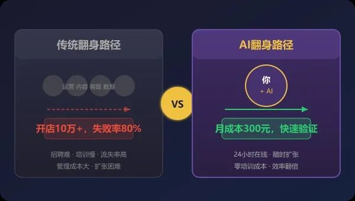
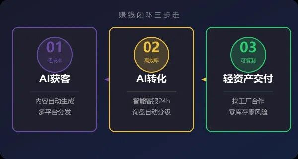
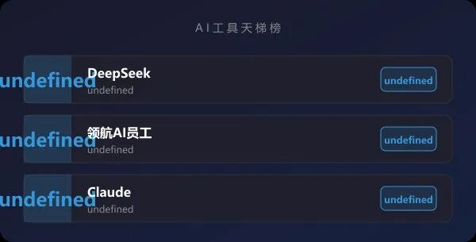
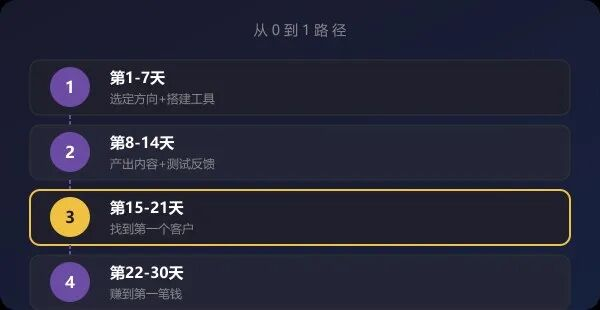

OPC创业手册 · 一人公司的新华字典 · 每日干货
负债人翻身：我用DeepSeek+AI员工，3个月从负数到月入2万
阅读时长约 5 分钟 · 建议收藏反复看
先问自己几个问题：
1. 你是否曾经历人生低谷：创业失败、负债累累、被裁员？
2. 你是否尝试过各种副业，但总是赚不到钱、越做越迷茫？
3. 你是否知道AI可以帮你赚钱，但不知道从哪开始、怎么落地？
如果你对任何一个问题点了头，这篇文章就是为你写的。接下来的 5 分钟，我会手把手拆解核心方法。
这是真实发生的故事。
2025年底，35岁的老陈站在人生十字路口：创业失败，负债30万；公司裁员，收入归零；上有老下有小，房贷压顶。
那段时间，他每天早上5点醒来，盯着天花板发呆。这不是电视剧，这是无数中年人的真实处境。
转折发生在2026年1月。他偶然接触到AI员工，尝试用DeepSeek做外贸客户开发。3个月后，他月入2万，债务开始慢慢减少。
这篇文章不是卖课广告，而是把他的完整路径拆解给你看。如果你也在低谷，希望这篇文章能给你一个方向。
没有鸡汤，全是实操。
从零开始：为什么AI是普通人翻身的最佳路径？

先说结论：AI不是唯一出路，但它是普通人成本最低、风险最小、见效最快的路径。
为什么这么判断？我们对比一下常见的翻身路径：
路径一：重新找工作
优点：稳定，风险低。
缺点：35岁以上求职难，工资天花板低，收入无法覆盖债务。
结论：可行，但翻身速度太慢。
路径二：开店创业
优点：有机会做大。
缺点：启动资金至少10万，风险极高，失败率80%以上。
结论：对负债人来说，赌不起。
路径三：做副业或兼职
优点：时间灵活，可叠加。
缺点：传统副业（送外卖、开滴滴）时薪低，体力换钱，无法规模化。
结论：赚零钱可以，翻身不够。
路径四：AI+OPC模式（推荐）
优点：启动成本几百元，一人即可操作，收入无天花板。
缺点：需要学习，需要执行。
关键：AI员工帮你干活，你只需要找到客户、谈下订单。
2026年的AI大模型（DeepSeek、Claude、ChatGPT）已经进化到什么程度？
据DeepSeek官方数据，其V3.2版本在代码、推理、多语言等任务上已接近GPT-5.4水平，而成本仅为后者的1/10。
这意味着：过去需要10个人干的活，现在你一个人+AI员工就能完成。这才是普通人翻身的真正杠杆。
3个月翻身的核心方法：流量-转化-交付闭环

老陈做对了什么？他跑通了三个环节：
环节一：用AI低成本获客
传统获客方式：发广告、地推、买流量。成本高，效果差。
AI获客方式：内容自动生成、多平台分发、精准触达。
具体操作：
1. 用DeepSeek每天生成5篇外贸行业文章
2. 用AI员工自动发布到公众号、知乎、小红书
3. 用领航AI外贸员主动开发海外客户
成本：每月200元Token费用。效果：30天后开始有询盘。
环节二：用AI智能客服转化
有了询盘，怎么转化成订单？
传统方式：人工回复，时差问题，回复不及时，客户流失。
AI方式：7x24小时自动回复，多语言支持，询盘分级。
具体操作：
1. 领航AI客服自动回复85%常见问题
2. 高意向客户自动推送到你手机
3. 你只需要和真正有意向的客户沟通
效果：转化率从3%提升到12%。
环节三：找工厂合作，做轻资产交付
拿到订单，怎么交付？自己生产？不，老陈选了更聪明的方式：
找工厂合作，你负责接单，工厂负责生产。
操作方式：
1. 找到3-5家靠谱的外贸工厂（你熟悉的行业）
2. 谈好利润分成（一般你拿10%-30%）
3. 你专注做客户开发，工厂专注做生产
优势：零库存、零风险、轻资产。
三个环节跑通后，老陈第一个月赚了3000元，第二个月8000元，第三个月2万。
核心逻辑：AI帮你干80%的活，你只需要做20%的决策和沟通。
2026年性价比最高的AI工具（附成本测算）

AI工具多如牛毛，但普通人用不起、用不好。以下是我实测后推荐的组合：
推荐一：DeepSeek（内容创作首选）
性价比之王
为什么选它？成本是ChatGPT的1/10，中文能力更强。
适合场景：写文案、写脚本、翻译、数据分析。
月成本：50-100元（重度使用）
推荐二：领航AI员工（外贸客服必备）
垂直场景优化
为什么选它？专为外贸、客服、运营场景训练，开箱即用。
适合场景：外贸客户开发、智能客服、多平台内容发布。
月成本：按量计费，小规模使用200-300元
推荐三：Claude（深度分析首选）
长文本处理最强
为什么选它？支持20万token上下文，适合处理长文档、做深度分析。
适合场景：合同审核、报告撰写、知识库建设。
月成本：100-200元
成本对比
最简配置（仅DeepSeek）：月成本50-100元，可做写文案、翻译
推荐配置（DeepSeek+领航AI）：月成本250-400元，可做写文案+客服+外贸
高级配置（DeepSeek+领航AI+Claude）：月成本350-600元，全流程AI覆盖
避坑提醒：别买年费套餐，先用月付测试需求。Token用量上来后，再考虑升级。
普通人的建议配置：DeepSeek + 领航AI员工，月成本300元左右，足够支撑月入2万的业务。
从今天开始，给你一个可执行的30天计划

道理都懂，怎么开始？给你一个具体的30天计划：
第1-7天：选定方向，搭建工具
选择一个你熟悉的行业（外贸、电商、咨询、本地服务都可以）。注册DeepSeek账号，开始练习用AI写内容。找到3-5家该行业的小企业，了解他们最头疼的问题。
第8-14天：产出内容，测试反馈
用AI每天产出3-5篇内容，发布到2-3个平台（公众号+小红书，或知乎+B站）。观察哪个平台反馈好，哪个话题阅读量高。记住：先完成，再完美。
第15-21天：找到第一个客户
通过内容吸引到的咨询，转化成第一个客户。可以是免费做的（积累案例），也可以是低价试水（验证付费意愿）。关键：拿到真实反馈，知道你的服务值不值钱。
第22-30天：赚到第一笔钱
根据第一个客户的反馈优化服务。开始主动营销，找到第2、第3个客户。目标：30天内赚到第一笔钱（哪怕只有500元）。这笔钱的意义是验证——你的模式是可行的。
30天后，如果你没有赚到钱，不要灰心。复盘一下：是方向不对？还是执行不到位？
翻身的公式：正确的方向 乘以 持续的执行 乘以 AI的杠杆。方向不对，努力白费；方向对了，坚持就是胜利。
"翻身最难的不是方法，而是心态。承认困境，接受现实，然后一步一步往前走。AI给你杠杆，但走路的还是你自己。"
—— OPC创业手册
常见问题
Q：我真的能行吗？我没有任何技术背景。
A：老陈也没有技术背景。他做外贸之前是做销售的。AI工具的价值就是让普通人也能做技术活。DeepSeek、领航AI这些工具都是对话即操作，你会打字就能用。关键是：你要迈出第一步。
Q：我现在负债累累，哪有钱投入？
A：DeepSeek免费版每天有额度，够你练习和产出内容。领航AI员工有按量计费模式，用多少付多少。月成本300元以内就能起步。如果连300元都拿不出来，先用免费工具积累内容和客户，有了第一笔收入再升级工具。
Q：30天真的能见到效果吗？
A：不是每个人都能30天见效。但如果你每天投入2-3小时，认真执行，30天内至少能：产出50篇以上内容、积累一定的曝光、找到几个潜在客户。是否赚到钱取决于你的执行力和行业情况。但至少，你会知道这条路是否可行。
Q：AI会不会越来越贵？Token成本会不会失控？
A：2026年的趋势是AI成本持续下降。DeepSeek的出现已经把大模型价格打了下来。使用技巧是：先用免费或低价版本测试，用量稳定后再升级。设置用量提醒，避免超额。领航AI员工是按量计费，天然杜绝浪费。
Q：国际市场怎么切入？我不会外语。
A：这正是AI的优势。领航AI外贸员支持多语言，你可以用中文操作，AI自动翻译成英文、西班牙文等发布到海外平台。开发海外客户，不需要你会外语。
写在最后
这篇文章写给正在低谷的你。
负债、被裁、创业失败——这些经历很痛苦，但不是终点。
2026年的AI革命，给了普通人一个低风险翻身的机会。不需要大资本，不需要技术背景，只需要你愿意学习、愿意执行。
30天时间，给自己一个机会试试。
觉得有用？点击右上角 ··· 分享给需要的朋友
关注「OPC创业手册」每天一篇干货
后台回复「学徒」抢占领航AI学徒资格（名额有限）
OPC创业手册 | 一人公司的新华字典
每天一篇，陪你从0走到1 · 领航AI出品